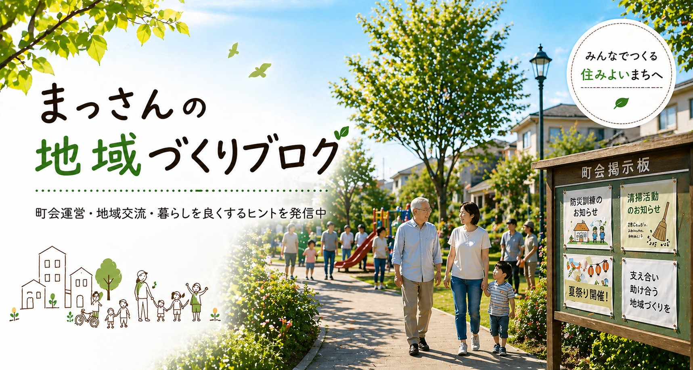
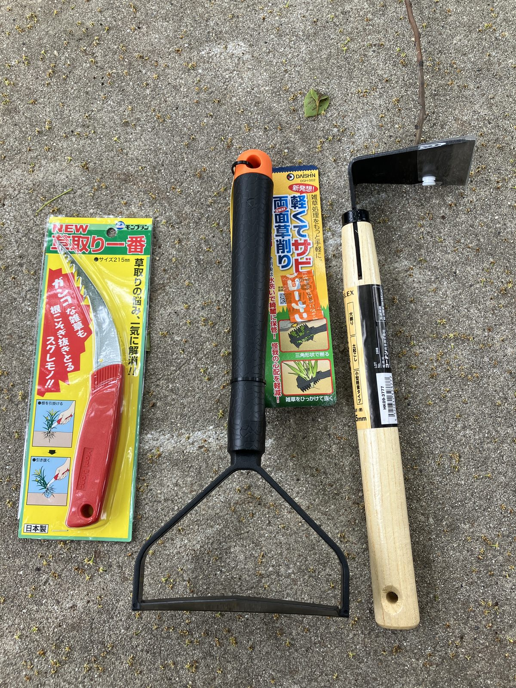
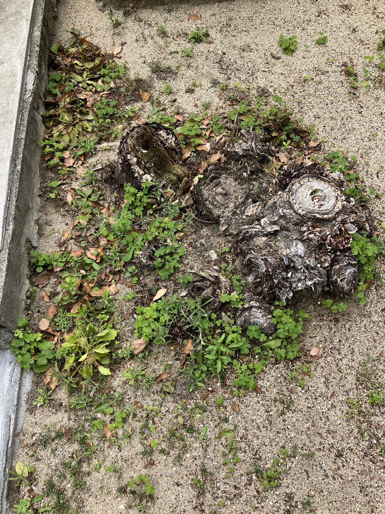
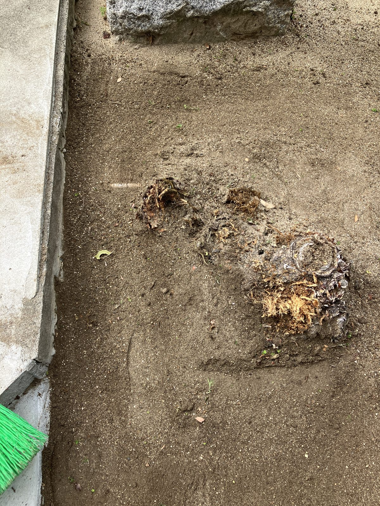

先日の清掃活動をきっかけに、ちゃんとした道具を揃えることにしました。ホームセンターで3点購入。

左から「草取り一番（鎌タイプ）」「両面草削り」「鍬」の3点です。使い勝手はまぁまぁといったところ。特に両面草削りは、浅い根の草をサッと削るのには便利でしたが、深く根を張っているものには少し力がいりました。
今回は切り株のまわりに生えてきた雑草を中心に除去しました。


作業後はだいぶすっきりしました。道具があると作業効率がやはり違います。
最近は、町内を歩くときに道路の端や縁石まわりの雑草が自然と目に入るようになってきました。町会長になってから、街の見え方が少し変わった気がします。